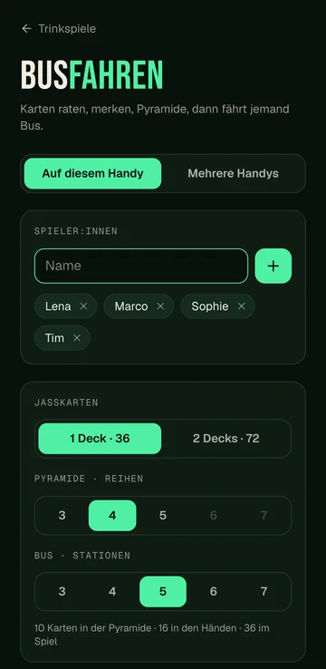
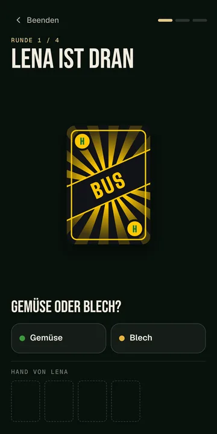
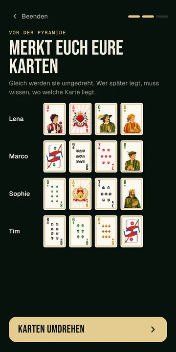
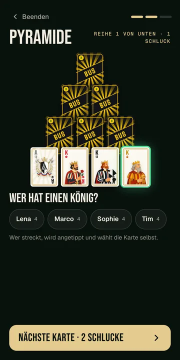
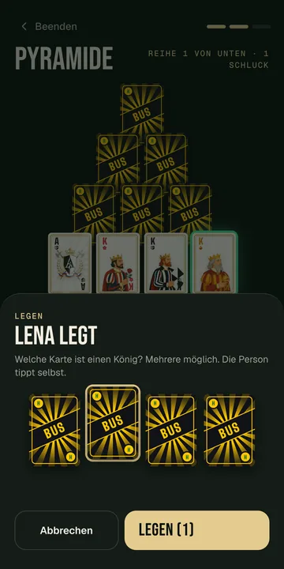
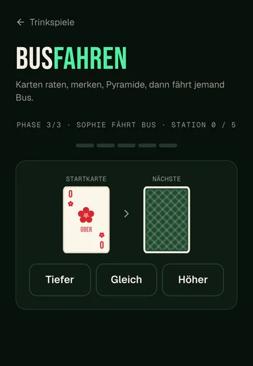

Pyramide und Bus
Ihr wählt die Anzahl Reihen der Pyramide und die Stapel der Busfahrt (3 bis 7). Die App rechnet aus, wie viele Karten gebraucht werden.
Trinkspiel · Karten
Drei Phasen mit Jasskarten: Karten raten, Pyramide legen und am Ende fährt jemand Bus.

Gespielt wird mit dem Deutschschweizer Jassblatt, 36 Karten in den Farben Eicheln, Rosen, Schellen und Schilten. Eicheln und Rosen heissen beim Raten «Gemüse», Schellen und Schilten «Blech».
Die Jasskarten, die Pyramide und die Busfahrt, wie sie in der App aussehen.






Ihr wählt die Anzahl Reihen der Pyramide und die Stapel der Busfahrt (3 bis 7). Die App rechnet aus, wie viele Karten gebraucht werden.
Mit vielen Leuten spielt ihr mit mehreren Decks.
Eine Runde per Code oder QR-Code. Jede Person sieht ihre Karten auf dem eigenen Handy, gemischt wird von der App.

Zwei Teams, ein Becherdreieck, Chlapf zählt live mit.

Teams, Tische, Resultate und Siegerehrung an einem Ort.

Vier Asse laufen um den Sieg, ihr setzt Schlücke.

Challenges, Aufgaben, neue Regeln und Geheimaufträge.

Fragen vorlesen, wer's gemacht hat, trinkt.